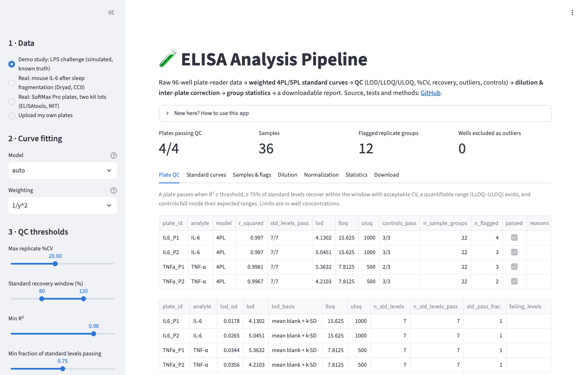
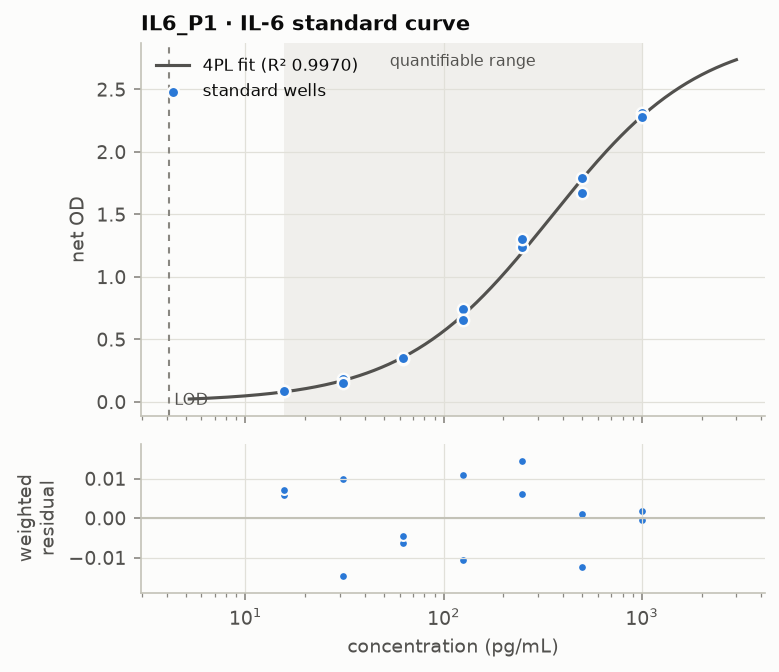
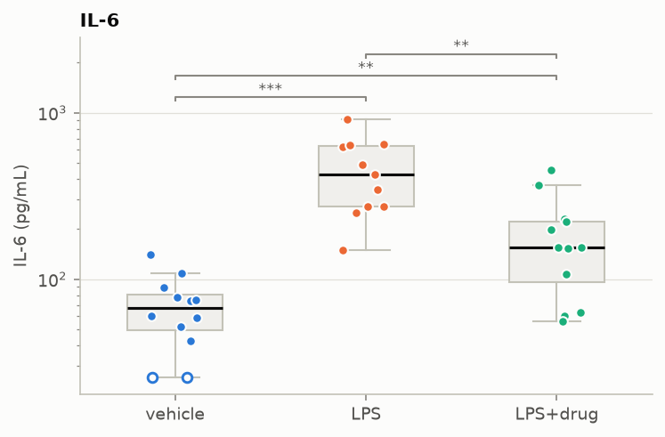
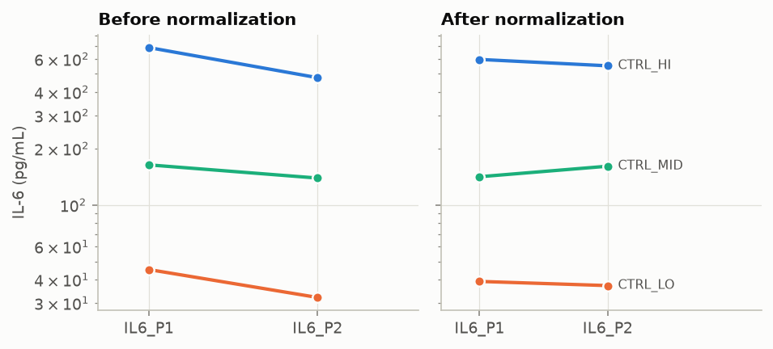
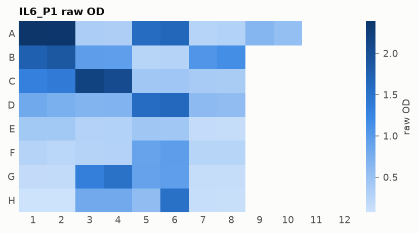

Bioanalytical data science · Python
ELISA Analysis Pipeline
A tested, end-to-end pipeline that turns raw 96-well plate-reader data from sandwich ELISAs into quality-controlled analyte concentrations, statistical comparisons between treatment groups, and an audit-ready report.
The app runs entirely in your browser (Python compiled to WebAssembly). The first load takes about 30 seconds while the scientific Python stack downloads.
135
automated tests · 97% coverage
< 8%
median error recovering simulated ground truth
2
public real-world datasets re-analysed
0
servers needed for the live app

What it does
Each stage is a documented module with the scientific reasoning in its docstrings.
Parse & validate platesBlank subtraction
Weighted 4PL / 5PL fit (AICc)Back-calculation
Outliers · %CV · recoveryLOD / LLOQ / ULOQ
Controls & plate pass/failDilution linearity
Inter-plate normalizationWelch / Mann-Whitney / ANOVA · BH-FDR
HTML report
Outputs




Real data, honest conclusions
Notebook · biology
Serum IL-6 after sleep fragmentation
A re-analysis of a published mouse study (Dryad, CC0).
- The original straight-line calibrations recover standards at 28–142%. The weighted 4PL recovers 94–102%.
- 100 / 110 samples fall below the LLOQ.
- A labelled sensitivity analysis still reproduces the IL-6 rise at 6, 12 and 24 h.
- Rule-based outlier QC matches the analyst on 4 / 4 wells, and exposes 13 discretionary masks.
- A shared control reveals a ~30% kit-lot shift, which normalization corrects.
Reports
Self-contained HTML, regenerated from the code on every deploy.
SimulatedDemo study
Two cytokines, three treatment groups, four plates with calibrator bias, edge effects and outlier wells.
Real dataMouse IL-6
Four plates and 110 samples, with plate acceptance, censoring and flags.
Real dataSoftMax plates
Triplicate QC and kit-lot normalization.
Built with
Python 3.11–3.13NumPypandas
SciPy (curve_fit)statsmodelsmatplotlib
Streamlitstlite / Pyodide (WebAssembly)
pytestruffGitHub ActionsGitHub Pages